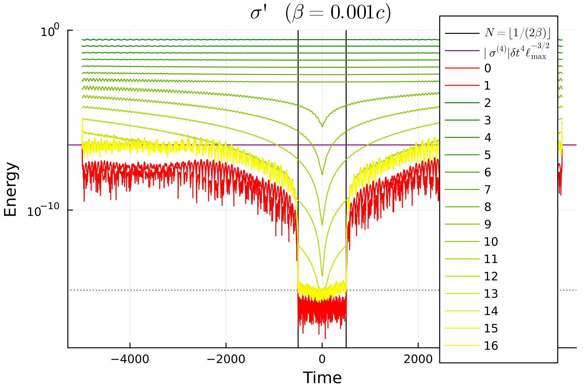
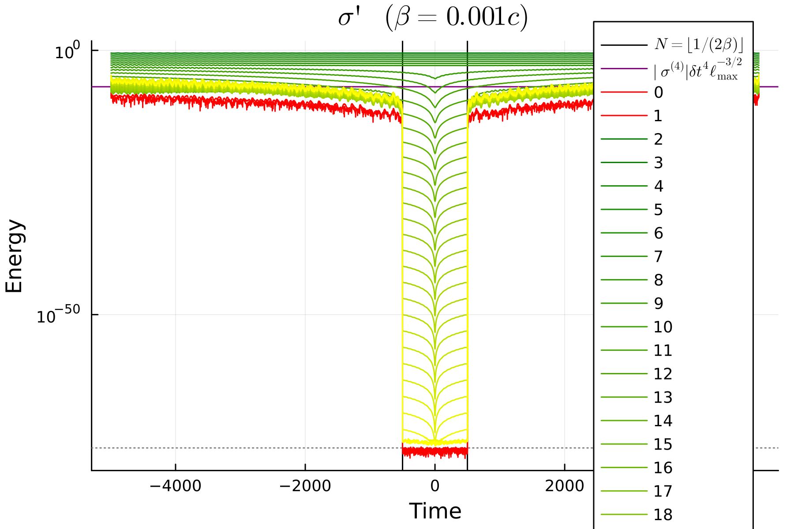

Spline Errors
Given tabulated gravitational-wave data sampled at discrete retarded times, BMS transformations (other than simple time shifts or rotations) involve changing time slices, thus requiring interpolation to evaluate the waveform in a given direction at the appropriate time. But if the interpolation is not globally smooth, the resulting function on the sphere will have a spatial discontinuity at some finite order of tangential derivative, which in turn causes the SWSH expansion to converge only algebraically, with a persistent power-law floor in the truncation error as $ℓ_\text{max}' → ∞$. Here, we quantify this effect for B-spline interpolation, which is commonly used in numerical-relativity waveforms.
A B-spline of order $n$ (polynomial degree $n-1$, so the familiar cubic spline is order 4) achieves $C^{n-2}$ continuity at knots, and $C^∞$ continuity between knots, with interpolation error bounded by $O(Mₙ (δt)^n)$ where $Mₙ = \max|H⁽ⁿ⁾|$ is the largest magnitude of the $n$-th derivative of the function being interpolated [15, 16].
Within any single spline interval all sky directions $n̂$ require rest-frame times from that same cubic (or degree-$(n{-}1)$) polynomial, so the function $f(n̂) = H_\text{spline}\left(t' K^{-1}(n̂)\right)$ on the sphere is a polynomial composed with the smooth Doppler factor $K^{-1}(n̂)$, hence analytic, and its SWSH expansion converges exponentially. Once different sky directions require times from different spline intervals, however, the angular function acquires a $C^{n-2}$ kink — a jump in the $(n-1)$-th tangential derivative — along the level-set curve ${t' K^{-1}(n̂) = t_k}$ on $S²$. For a boost of speed $β$ this transition first occurs when $2β|t'| > δt$, i.e., after only $N_\text{good} ≈ ⌊ 1/(2β) ⌋$ time steps from the retarded-time origin. An additional supertranslation of peak-to-peak amplitude $Δα$ reduces this to $N_\text{good} ≈ \max(0, ⌊ (1 - Δα/δt)/(2β) ⌋)$.
It's worth pausing for a moment to remark on this unusual relation: for a simple boost, the number of time steps away from $t=0$ that can be accurately represented is determined by the boost. This is a discrete number being given by a continuous parameter, and is independent of the coarseness of the time sampling. The really remarkable thing is how precisely this relation is borne out in practice, with a discontinuous jump in the error at the predicted time step, regardless of the characteristics of the system being transformed. This number is further reduced by any supertranslation, in a way that does depend on the time sampling.
The spectral consequences of the kink are quantified by Livermore [17]: a function on $S²$ with an algebraic singularity of order $p$ along a smooth curve has energy spectrum $E(ℓ) ∼ ℓ⁻⁽ᵖ⁺¹⁾$, where energy is defined as the sum of the squares of the SWSH coefficients at each $ℓ$:
\[E(ℓ) = \sum_{m=-ℓ}^ℓ |f_{ℓm}|^2.\]
For an order-$n$ B-spline the singularity order is $p = n-1$, giving
\[E(ℓ) ∼ ℓ^{-n}, \qquad ϵ_\text{trunc} ∼ Mₙ(δ t)^n ⋅ (ℓ_\text{max}')^{-(n-1)/2}.\]
For cubic splines ($n = 4$) this yields $E(ℓ) ∼ ℓ^{-4}$ and $ϵ_\text{trunc} ∼ M₄ (δt)^4 (ℓ_\text{max}')^{-3/2}$, a persistent power-law floor analogous to the Gibbs phenomenon [18]. Using higher-order splines lowers the floor as $Mₙ(δt)^n$ and steepens the power law, but convergence requires $ω_\text{max}\,δ t < 1$ (all frequencies sampled above Nyquist), and for numerical-relativity waveforms the effective upper frequency is close to Nyquist, limiting practical improvement.
It is possible to test exponential convergence by using a globally smooth interpolant, such as a Chebyshev expansion, which is not piecewise-defined and thus has no knots. However, Chebyshev expansions are not well suited to tabulated data because between the data points they can have large and unphysical oscillations. The constructed functions are better thought of as representative of gravitational waveforms exclusively for testing purposes, rather than representing true physics.
Example
Here, we demonstrate these effects using a simple test waveform boosted to $\beta = 0.001c$. The test waveform is given by
\[σ_{ℓ,m} = \begin{cases} Ω^{ℓ/3} \exp\left(-i m Ω t\right) & 2 \leq ℓ \leq 8, \\ 0 & \text{otherwise}, \end{cases}\]
with $Ω ≈ 0.025$, $v = ∛Ω$, and sampling of $δt ≈ 1$. The $Ω^{ℓ/3}$ is chosen to very roughly correspond to the post-Newtonian scaling, and the phase corresponds to rigid rotation with constant frequency $Ω$ chosen to be below the Nyquist frequency even up to $ℓₘₐₓ=16$.
The "good" region is delimited with a pair of vertical bars, and the predicted spline plateau is shown as a horizontal bar. The plot shows the energy spectrum of the transformed $σ'$ components. The modes with $2 ≤ ℓ ≤ 8$ are roughly constant in time and converge exponentially with increasing $ℓ$, as expected. Modes with $ℓ > 8$ converge very quickly to machine precision at $t=0$, but increase in both directions from there, roughly linearly with time. Again, this is the expected analytical behavior. The modes with $ℓ ≳ 13$ are initially below $ℓₘₐₓ ϵ$ (where $ϵ ≈ 10^{-16}$ is machine precision), but beyond $N_\text{good} = ⌊ 1/(2β) ⌋$ they immediately jump up to the resolved $ℓ=12$ mode, until they plateau at the predicted level.
Note that the $ℓ=0$ and $1$ modes shown in red would analytically be zero, but are retained for diagnostic purposes. These are the $\xi$ quantities described in the explanation of the SSHT. The fact that they are smaller than any other modes is a good consistency check that the algorithm is working as expected.

One very important point is that this structure is the same regardless of the precision of the numbers being used. We can use Julia's built-in extended-precision number type BigFloat, which have $ϵ ≈ 10^{-77}$. We also have to extend to $ℓₘₐₓ = 35$ to obtain full convergence to this new $ℓₘₐₓ ϵ$. As seen in the plot below, near $t=0$, the modes do indeed converge nicely all the way down to nearly that precision. However, exactly at the expected distance from $t=0$, the modes again jump up to the same plateau as before. There is no improvement in the plateau level, despite the much higher precision, because the plateau is determined by the spline interpolation error, which is independent of the numerical precision.
